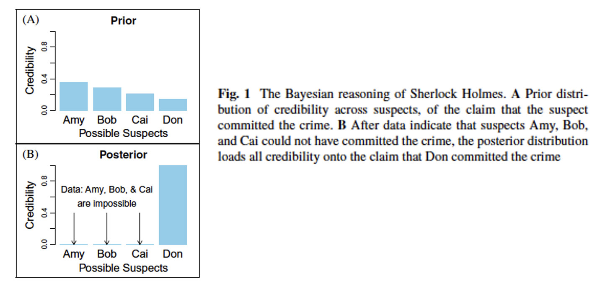
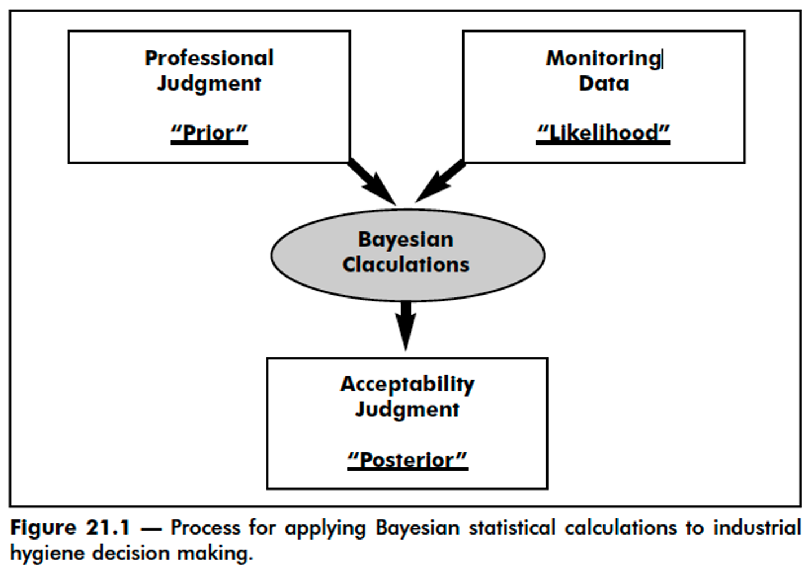
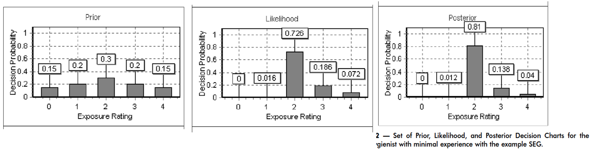
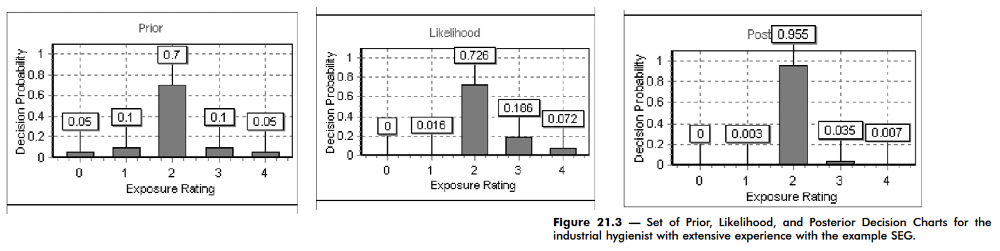
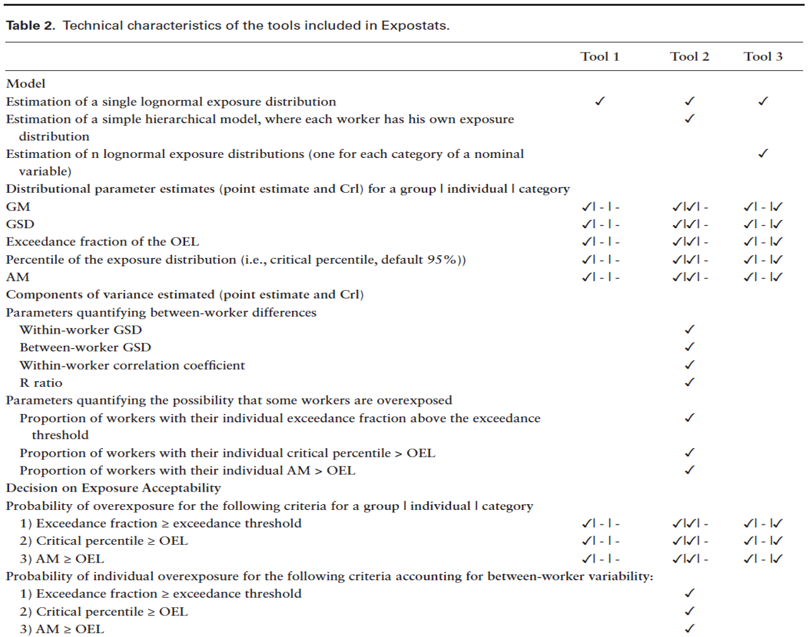
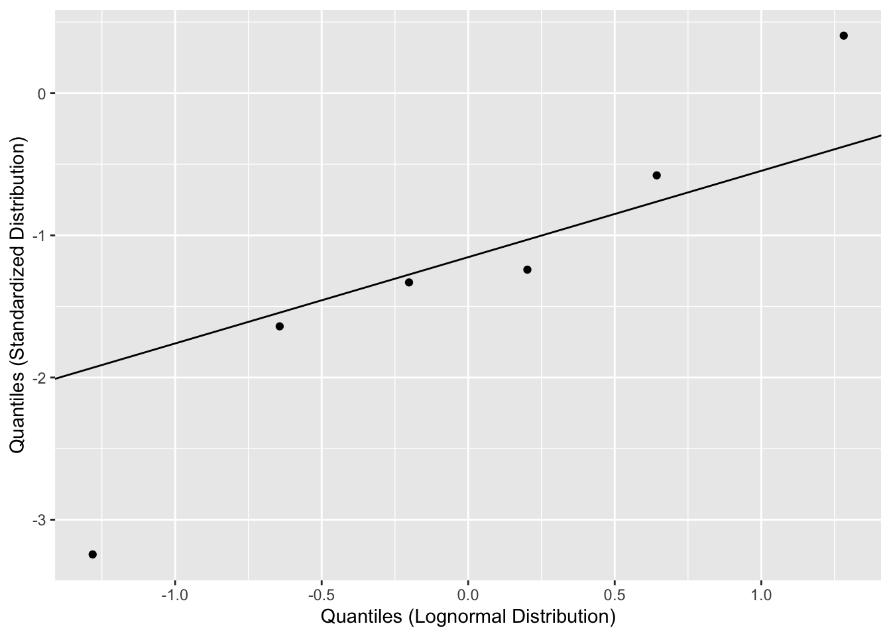
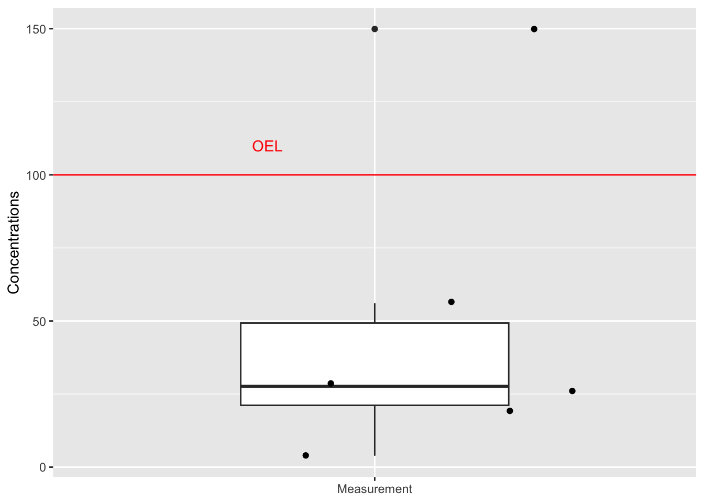
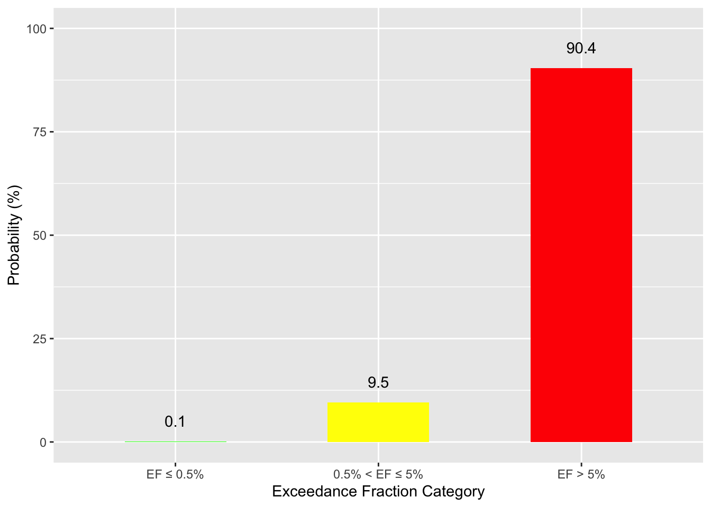
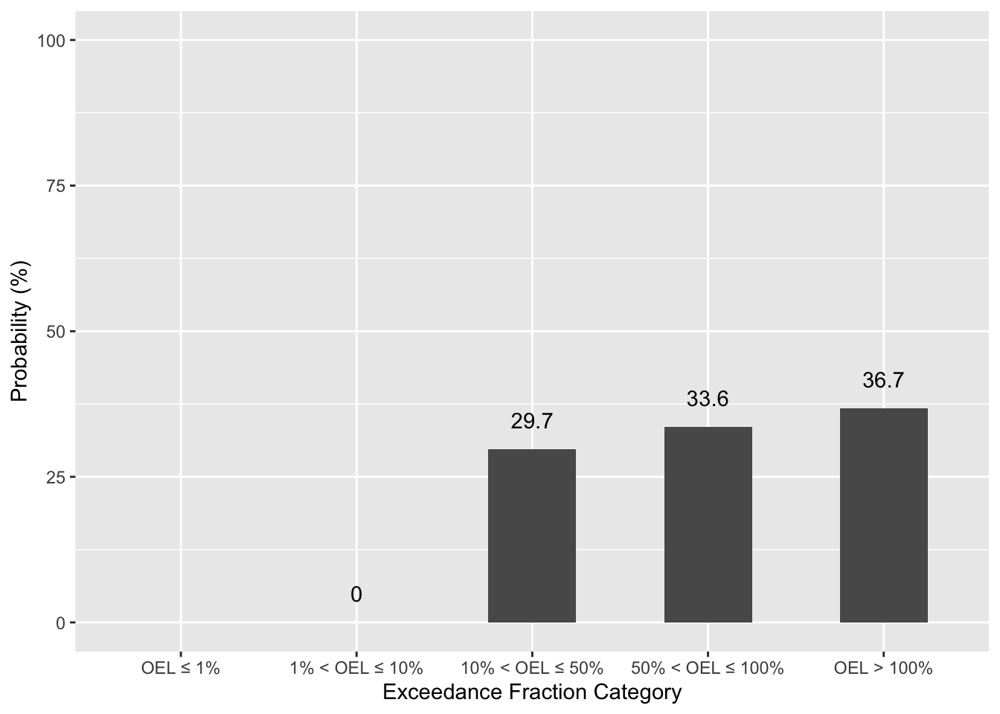

Bayesian analysis
Assignment 4
Basically what Sherlock Holmes did

Kruschke JK, Liddell TM. 2018

AIHA Exposure Assessment Manual, 3rd ed, 2006

AIHA Exposure Assessment Manual, 3rd ed, 2006

AIHA Exposure Assessment Manual, 3rd ed, 2006
Free online tool to aid with exposure analysis
Actually 3 tools in 1
http://www.expostats.ca/site/en/tools.html

We will conduct the Bayesian analysis in the library rstanarm
This will not replicate Expostats exactly since it uses a slightly different Bayesian model
We will use rstanarm because it is simpler to run
You can view the exact model specifications of Expostats at https://github.com/webexpo/webexpo_r_lib/tree/master
We will focus on Tool 1 only here: https://lavoue.shinyapps.io/tool1/?lang=en&mode=extended
Let’s set the calculation parameters as you would on the webpage
Prep data to run Bayesian model
Run Bayesian model using rstanarm:stan_glm()
Formally,
\[ \text{log}(X_i/\text{OEL}) \sim N(\mu, \sigma^2) \]
where:
\(\mu \sim N(0, 10^2)\), while Expostats uses \(U(-20, 20)\)
\(\sigma \sim \text{half-normal}(0, 2^2)\), while Expostats uses a lognormal prior with log-mean of \(-0.1744\) and log-SD of \(1/\sqrt{2.5523}\)
tool1_bayes <- rstanarm::stan_glm(
log_exp ~ 1,
data = df_exposure,
family = gaussian(link = "identity"),
prior_intercept = rstanarm::normal(
location = 0,
scale = 10,
autoscale = FALSE
),
prior_aux = rstanarm::normal(
location = 0,
scale = 2,
autoscale = FALSE
),
chains = 4,
iter = 4000,
warmup = 2000,
seed = 12345,
adapt_delta = 0.99,
refresh = 0
)
draws <- as.matrix(tool1_bayes)
# mu is on the log(X/OEL) scale throughout this function.
mu <- draws[, "(Intercept)"]
sigma <- draws[, "sigma"]Get summary statistics
tibble(exposures) %>%
summarise(
`Number of observations` = n(),
`Minimum` = min(exposures),
`2.5th percentile` = quantile(exposures, probs = 0.25),
Median = median(exposures),
`75th percenitle` = quantile(exposures, probs = 0.75),
Maximum = max(exposures),
`Proportion >OEL` = 100*sum(exposures>100)/n(),
`Arithmetic Mean` = mean(exposures),
`Arithmetic SD` = sd(exposures),
`Coefficient of Variation` = 100*sd(exposures)/mean(exposures),
`Geometric Mean` = exp(mean(log(exposures))),
`Geometric SD` = exp(sd(log(exposures)))
) %>%
gather(`Sample Statistic`, `Value`) %>%
mutate(Value = round(Value, 1)) %>%
print(n = 12)# A tibble: 12 × 2
`Sample Statistic` Value
<chr> <dbl>
1 Number of observations 6
2 Minimum 3.9
3 2.5th percentile 21.2
4 Median 27.7
5 75th percenitle 49.3
6 Maximum 150.
7 Proportion >OEL 16.7
8 Arithmetic Mean 47.4
9 Arithmetic SD 53
10 Coefficient of Variation 112.
11 Geometric Mean 28
12 Geometric SD 3.4Create Q-Q plot

Box and whiskers plot

Risk assessment: probability of overexposure
Overexposure is defined as the exceedance fraction being greater than or equal to 5%.
An exposure exceeds the OEL of 100 when \(\text{log}(X/\text{OEL}) > 0\)
In other words
\[ P(X > \text{OEL}) = P(\text{log}(X/\text{OEL}) > 0) \\ = 1 - \Phi(\frac{0-\mu}{\sigma}) \\ = 1 - \Phi(-\frac{\mu}{\sigma}) \\ = \Phi(\frac{\mu}{\sigma}) \]
[1] 90.3625So, the probability of overexposure is 90.4%, while the probability should be no more than 30%. This means the situation is problematic.
Estimates
50% 5% 95%
28.4 10.1 77.3 The geometric mean is 28.4 (90% credible interval: 10.1-77.3)
50% 5% 95%
17.2 3.3 44.2 The exceedance fraction is 17.2% (90% credible interval: 3.3-44.2%)
Risk-band plot
tibble(exceedance) %>%
mutate(categories = cut(exceedance, breaks = c(0, 0.005, 0.05, 1))) %>%
mutate(categories = factor(categories, labels = c("EF ≤ 0.5%", "0.5% < EF ≤ 5%", "EF > 5%"))) %>%
group_by(categories) %>%
summarise(probability = 100*round(n()/8000, 3)) %>%
ggplot(aes(x = categories, y = probability, fill = categories)) +
geom_col(width = 0.5) +
geom_text(aes(label = probability, y = probability + 5)) +
scale_fill_manual(values = c("green", "yellow", "red")) +
ylim(c(0, 100)) +
theme(legend.position = "none") +
labs(x = "Exceedance Fraction Category", y = "Probability (%)")
Risk assessment
Overexposure is defined as the arithmetic mean being greater than or equal to the OEL (100 in this case).
For reasons we won’t show here, the arithmetic mean of a lognormal distribution is \(\text{AM} = \text{OEL} * \text{exp}(\mu + \frac{\sigma^2}{2})\)
[1] 36.7125So, the probability of overexposure is 30.7%, while the probability should be no more than 30%. This means the situation is problematic.
Estimates
Risk-band plot
tibble(arithmetic_mean) %>%
mutate(normalized = arithmetic_mean/oel) %>%
mutate(categories = cut(normalized, breaks = c(0, 0.01, 0.1, 0.5, 1, Inf))) %>%
mutate(categories = factor(categories, levels = c("(0,0.01]", "(0.01,0.1]", "(0.1,0.5]", "(0.5,1]", "(1,Inf]"), labels = c("OEL ≤ 1%", "1% < OEL ≤ 10%", "10% < OEL ≤ 50%", "50% < OEL ≤ 100%", "OEL > 100%"))) %>%
group_by(categories) %>%
summarise(probability = 100*round(n()/8000, 3)) %>%
ggplot(aes(x = categories, y = probability)) +
geom_col(width = 0.5) +
geom_text(aes(label = probability, y = probability + 5)) +
scale_x_discrete(drop = FALSE) +
ylim(c(0, 100)) +
theme(legend.position = "none") +
labs(x = "Exceedance Fraction Category", y = "Probability (%)")